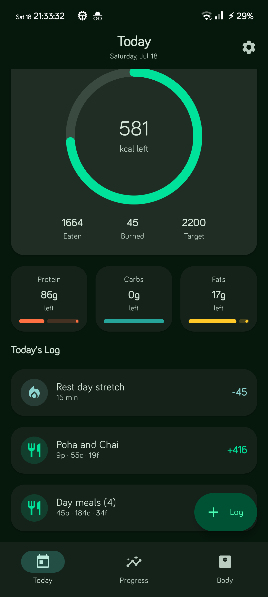
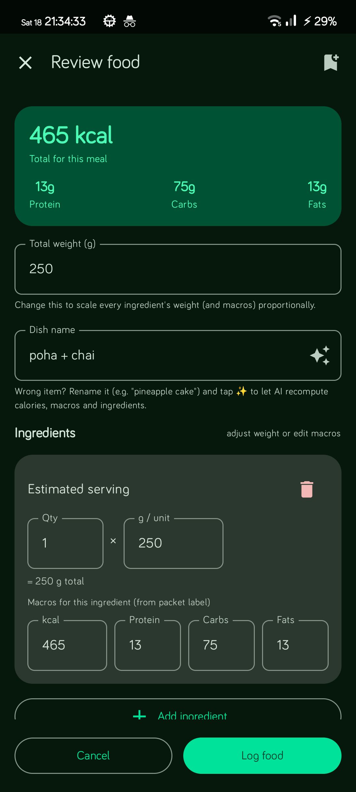
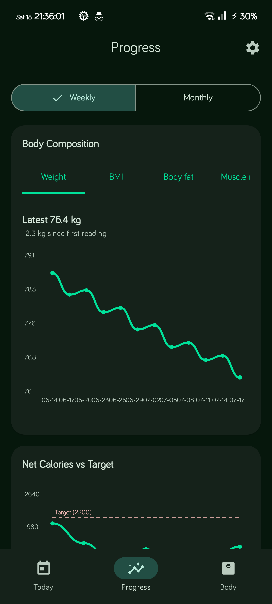

FitBuddy
Log the plate.
Track the burn.
AI-powered health tracking for Android — snap a plate or type what you ate, get calories and macros back. Region packs personalise prompts and portion language. Your data stays on your phone.
One flow. Real food.
Capture → review → watch the day add up. No calorie spreadsheet required.



Built for how you actually eat.
Home cooking, takeout, leftovers — freeform text, photos, and barcodes all work.
-
Region packs
Pick your region once. AI prompts, staples, portion units, and log examples follow that pack — change anytime in Settings.
-
Smart logging
Photo, loose text, or barcode scan. Your chosen AI estimates calories and macros; packaged foods look up Open Food Facts.
-
Meal review
Edit the dish name, tweak ingredient weights, watch macros update live. Save presets for next time.
-
Exercise catalog
Build structured sessions from 1,500+ moves with demo GIFs, favourites, body-part and equipment filters, and pinned filter order. Offline MET estimates calorie burn without a network call.
-
Private by default
Logs live on-device. Encrypted backups optional. Bring your own AI key — OpenRouter, Gemini, Ollama, or any OpenAI-compatible host.
-
Transparent targets
Set calorie and macro targets by hand, or calculate on-device with published rules, bounded trend feedback, and optional constrained AI selection. Past daily targets stay put when your goal changes. Read the methodology.
What’s new
Shipped since the last site update — also covered in the guide and FAQ.
-
Workout picker
Full ExerciseDB catalog with CDN demo GIFs, favourites, recent/frequent picks, smarter filter order, and long-press to pin filters you use most.
-
Offline burn estimates
Structured workouts estimate calories on-device with a MET formula — no AI round-trip required for burn numbers.
-
Barcode contributions
When a packaged product is missing, FitBuddy helps you add it through Open Food Facts so the next scan finds it.
-
Manual targets & history
Save your own calorie and macro targets. Changing a goal no longer rewrites past days — history keeps the targets you had then.
-
Progress heatmap
A compact six-month calorie-burn heatmap on Progress, alongside weekly and rolling 30-day intake charts.
-
Updates & support
F-Droid builds can check for updates in-app. Donations route by region (UPI/cards in India, GitHub Sponsors elsewhere). Named supporters get thank-you cards; support reminders stop once your Support ID is on the public list.
Three steps.
-
01
Install
F-Droid, OpenAPK, or the GitHub APK. Android 10+.
-
02
Connect AI (or skip)
OpenRouter sign-in, API key, or offline simulator — your call. Choose your region pack.
-
03
Log today’s food
Snap a plate or type what you ate. Review, save, done.
Your kitchen. Your keys.
Your device.
FitBuddy is open source (GPL-3.0). No FitBuddy account. Meal photos and API keys stay on your phone except when you ask an AI provider you chose to analyze a log — see Privacy.
Supporters
Named public supporters get the same trading cards in the app — tap to flip for lore and profile links. Amounts stay private; only the card chrome and crests are public.
Get FitBuddy
Same codebase on every store. Pick the channel you trust.
Requires Android 10+. GitHub APKs are arm64-v8a. F-Droid uses a different signing key — don’t mix update channels on one install.